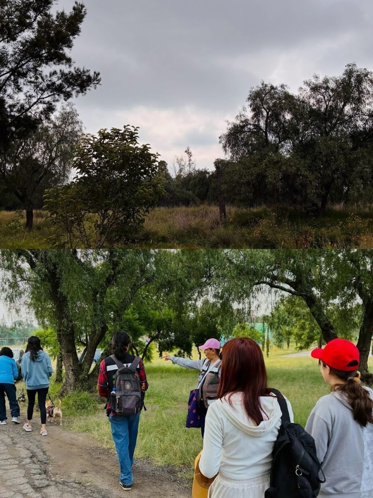
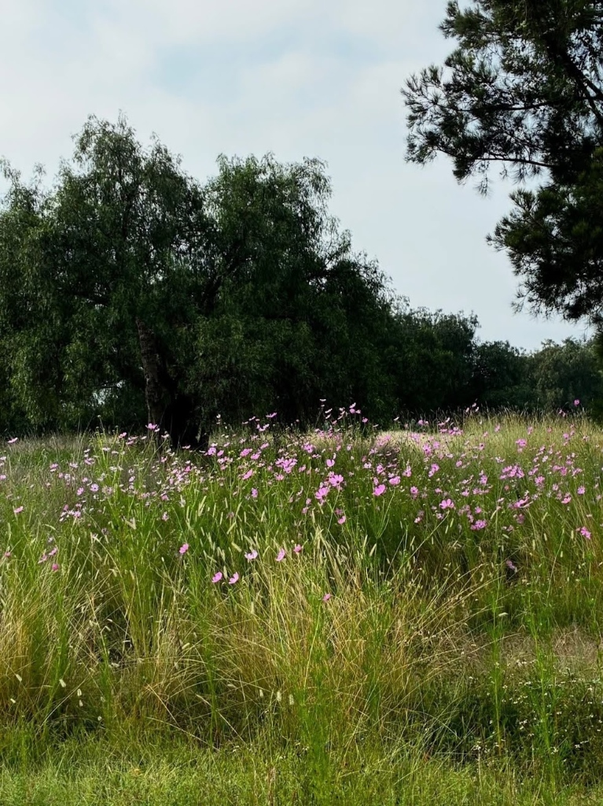
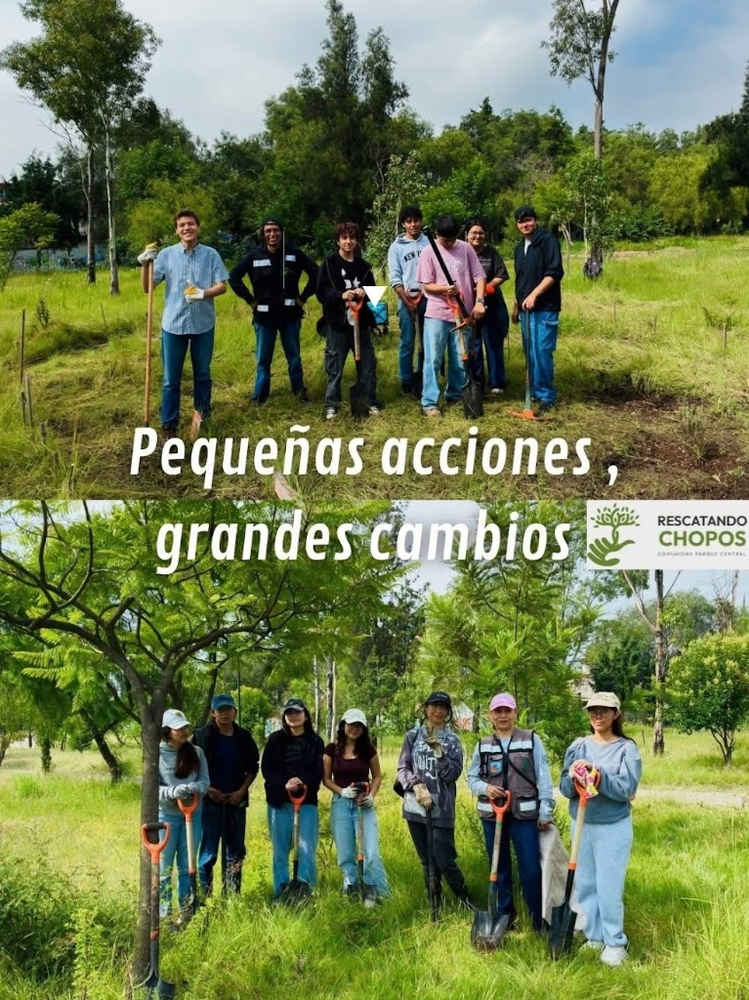
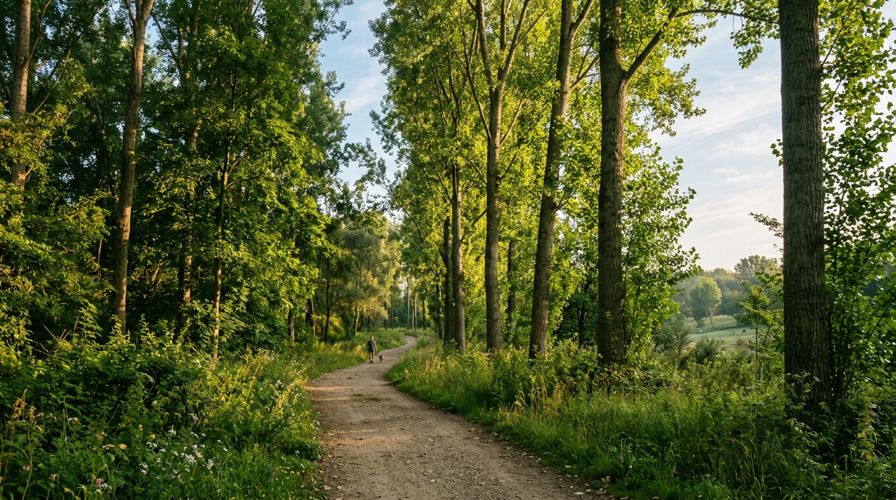
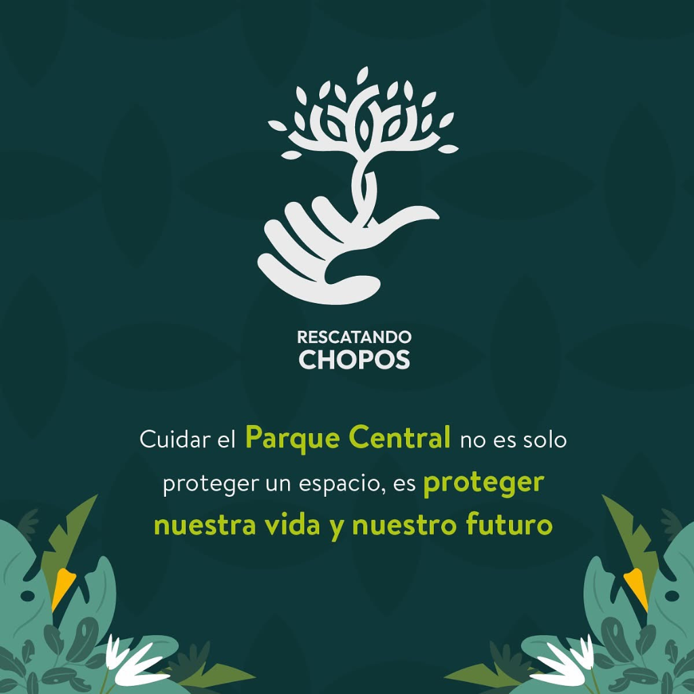
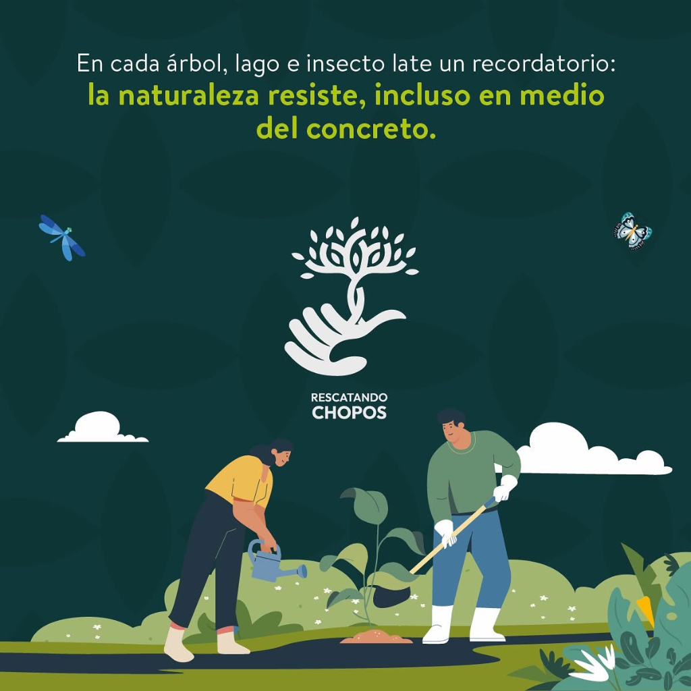

Iniciativa ciudadana para rescatar, restaurar y preservar el Área Natural Protegida Parque Central. Reforestamos con chopos nativos, limpiamos cañadas y construimos un espacio de vida para toda la comunidad.
Protegemos la recarga de mantos acuíferos y reducimos las islas de calor en Cuautitlán Izcalli.
“Somos una iniciativa ciudadana para rescatar, restaurar y preservar el Área Natural Protegida Parque Central.”
En medio del crecimiento urbano de Cuautitlán Izcalli, el Parque Central representa un oasis biológico fundamental. Alberga decenas de árboles majestuosos, entre ellos los emblemáticos chopos (álamos), caracterizados por su altura, su capacidad para oxigenar el entorno y capturar dióxido de carbono.
Los chopos ayudan a retener humedad en el suelo y reducen las islas de calor en las colonias circundantes como Arcos del Alba.
Un parque limpio y vivo es el mejor entorno para que niñas, niños, adultos mayores y mascotas disfruten con seguridad.

Caminata y Monitoreo Vecinal
Biodiversidad y Flora SilvestreTrabajamos de forma metódica y respetuosa con el ecosistema. Cada jornada tiene un propósito concreto para revitalizar el área natural.
Plantación técnica de especies nativas, colocación de tutores de bambú, cajetes para captación de lluvia y monitoreo continuo contra plagas.
Retiro y separación de residuos inorgánicos, llantas y escombro acumulado en senderos y cañadas. Devolvemos la dignidad a las áreas públicas.
Identificación de aves migratorias, fomento de jardines para polinizadores (abejas, mariposas y colibríes) y preservación de la flora nativa del Estado de México.
Talleres para niñas, niños y familias: composta casera, cuidado del agua, manualidades recicladas y caminatas guiadas de reconocimiento natural.

La transformación del Área Natural Protegida Parque Central no ocurre desde un escritorio: sucede cuando vecinas, vecinos, jóvenes y familias toman una pala, siembran un árbol y limpian con orgullo su entorno.
Jóvenes organizados para dar mantenimiento y protección a los chopos y arbolado nativo.
Un espacio donde vecinas y vecinos de Arcos del Alba y todo Izcalli conviven sanamente.
El Parque Central no es solo un conjunto de senderos: es un refugio biológico donde coexisten árboles majestuosos, polinizadores indispensables y aves migratorias en medio de la mancha urbana.

Arbolado InsigniaÁrbol de porte esbelto y rápido crecimiento que puede alcanzar hasta 25-30 metros de altura. Es el emblema de nuestra identidad vecinal.
Flores silvestres autóctonas de los pastizales del Estado de México. No son maleza: son la despensa biológica más importante de insectos benéficos.
El dosel de chopos maduros permite el anidamiento del pájaro carpintero y la visita constante de colibríes pico ancho y tórtolas de collar.
Pozuelos circulares cavados a mano alrededor de cada chopo para capturar el escurrimiento de lluvia, evitar erosión y humedecer el subsuelo.
Todas las actividades son gratuitas y para todas las edades. Selecciona la jornada a la que deseas acudir para recibir recordatorio e instrucciones.
Reflexiones nacidas de la tierra y del trabajo voluntario en el Parque Central de Cuautitlán Izcalli.

Cada metro cuadrado reforestado y cada sendero libre de basura es una inversión directa en la salud, la tranquilidad y el porvenir de nuestras familias en Arcos del Alba y Cuautitlán Izcalli.

Frente a las autopistas y el asfalto, este pulmón verde respira. Con cada brote regado y cada árbol protegido, demostramos que la vida siempre encuentra camino cuando la cuidamos juntos.
No necesitas ser experto en botánica ni disponer de todo el día. Cualquier granito de arena cuenta.
Asiste a nuestras jornadas de limpieza, siembra de árboles y riego comunal los fines de semana.
Apóyanos con palas, costales, abono de composta, mangueras o brotes de árboles nativos de la región.
Ayúdanos a visibilizar la causa compartiendo en Instagram y X para sumar a más colonos de Izcalli.
Si visitas el parque y notas tiraderos clandestinos o árboles en riesgo, avísanos para actuar de inmediato.
Ya sea que quieras sumarte a la próxima brigada, proponer un proyecto escolar o vecinal, o reportar alguna anomalía en el parque, estamos para escucharte.
¿Detectaste ramas caídas, acumulación de escombro o deseas vincular a tu empresa/escuela?
Autopista Querétaro-México 34, Col. Arcos del Alba
Cuautitlán Izcalli, C.P. 54750, Estado de México
Por lateral Autopista México-Querétaro sentido sur, entronque directo con Arcos del Alba.
Descenso sobre la autopista en puente peatonal Arcos del Alba o combis de Izcalli Centro.
Accesos peatonales seguros por andadores vecinales de Arcos del Alba hacia el kiosko.
Todo lo que necesitas saber antes de tu primera brigada ciudadana.